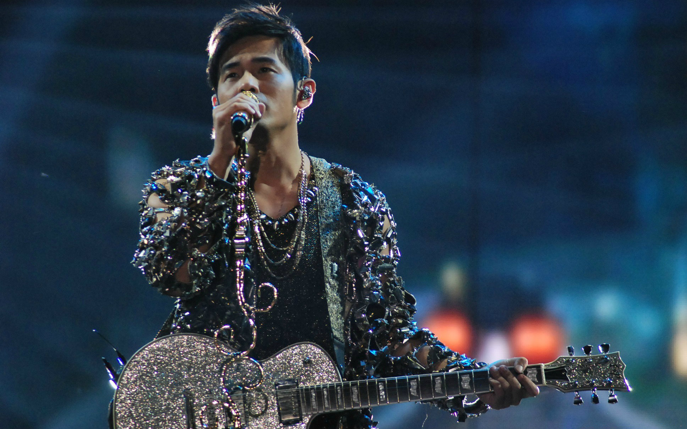
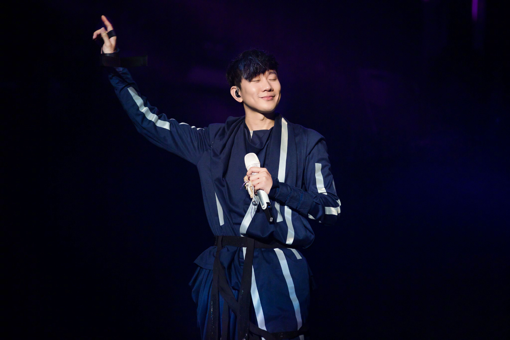
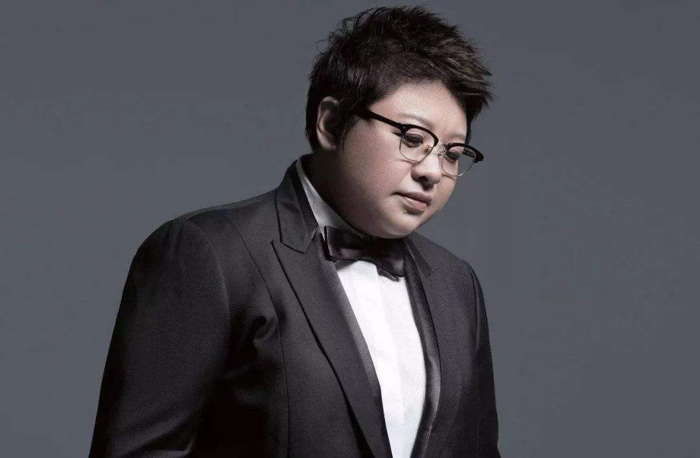
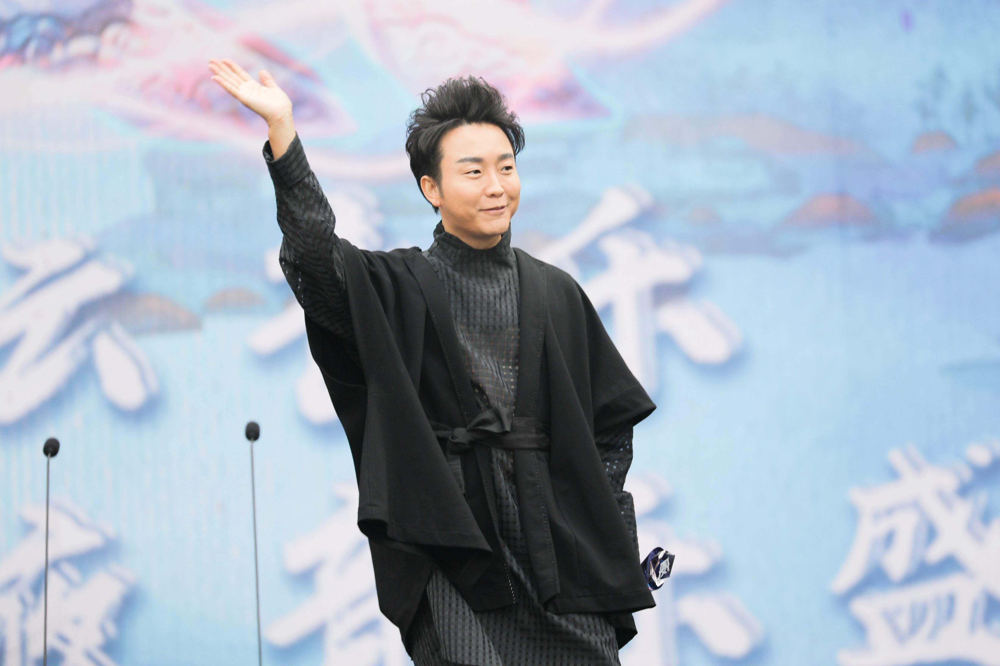
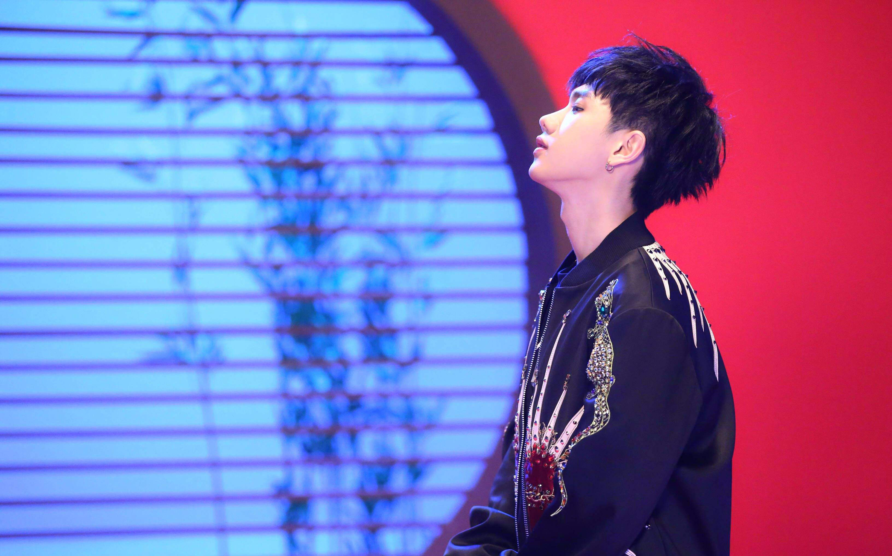
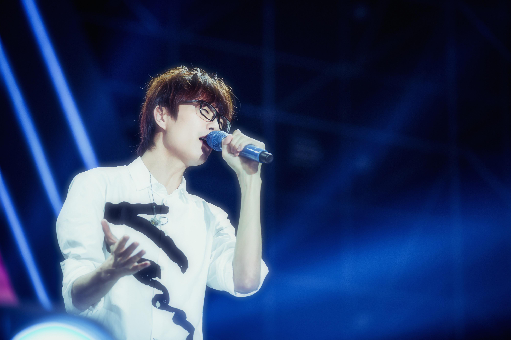

总有那么几首音乐让人无法忘怀，也总有那么一位歌手深深扎根于脑海里，论才华实力皆是不俗，那么你最喜欢的歌手有哪些呢?这里为大家整理了十位著名歌手，感兴趣的一起来看看吧。
周杰伦
代表作品：七里香、青花瓷、双截棍
周杰伦，出生于1979年1月18日，相信每个人的青春里都住着一个周杰伦，他在华语乐坛有着很大的影响力，不仅打破了原有的音乐形式，创造出了丰富多变的音乐风格，并注入了中国风元素，让音乐更加赋有中国文化色彩。
林俊杰
代表作品：江南、就是我、一千年以后
林俊杰，出生于1981年3月27日，中国十大原创歌手之一，他的声音想必已深深烙印在了每位观众的心里，辨识度极高，虽然作品不多，但是每一首都经得起岁月的沉淀，不管时隔多久依然会在耳边回响。
薛之谦
代表作品：认真的雪、演员、丑八怪
薛之谦，出生于1983年7月17日，“薛氏情歌”你听过几首呢?是《认真的雪》还是《深深爱过你》，这些歌曲都曾打动过无数听众，深深的被薛之谦的才华所吸引。
王力宏
代表作品：好心分手、缘分一道桥、大城小爱
王力宏（Wang Leehom），1976年5月17日出生于美国纽约州罗切斯特市，祖籍浙江省义乌市，华语流行乐男歌手、音乐人、影视演员、导演，毕业于威廉姆斯学院，拥有威廉姆斯学院和伯克利音乐学院双荣誉博士的学历。
韩红
代表作品：飞云之下、小尖尖、美丽的神话
韩红，1971年9月26日出生于西藏自治区昌都市，中国内地流行乐女歌唱家、音乐人、公益志愿者、导演、主持人，全国政协委员，国家一级演员，中国宋庆龄基金会理事，先后毕业于中国音乐学院、解放军艺术学院、中共中央党校研究生。
邓紫棋
代表作品：Where Did You Go、摩天动物园、多远都要在一起
邓紫棋，出生于1991年8月16日，在音乐方面颇具天分，是一位实力派歌手，从写词到唱作都是由她独立完成，且每一张唱片销量十分惊人，除开歌手这一身份外还是一名公益人，积极投身于慈善、教育事业之中，为社会贡献出自己的一份力量。
李玉刚
代表作品：万疆、刚好遇见你、新贵妃醉酒
李玉刚，1978年7月23日出生于吉林省长春市公主岭市，中国内地男歌手、艺术家，中国歌剧舞剧院国家一级演员。他的表演方式融合了中国民族艺术、将传统戏曲和歌剧等艺术元素结合为一体。
汪苏泷
代表作品：有点甜、后会无期、不分手的恋爱
1989年9月17日，汪苏泷出生于辽宁沈阳一个艺术世家。自幼对音乐产生了浓厚的兴趣，中学时开始接触学习古典音乐。大学毕业于沈阳音乐学院作曲系。在大学期间将自己的作品发表于各大音乐网站，并获得多个音乐排行榜首位，从而被唱片公司发掘，签约成为职业歌手。
许嵩
代表作品：有何不可、素颜、如果当时
许嵩（Vae），1986年5月14日生于安徽省合肥市，中国内地流行乐男歌手、原创音乐人，现任海蝶音乐公司（现为太合音乐集团）音乐总监，毕业于安徽医科大学。
汪峰
代表作品：光明、怒放的生命、春天里
汪峰，1971年6月29日出生于北京，祖籍江苏常州，中国内地男歌手、音乐创作人，摇滚乐队“鲍家街43号”的发起人。汪峰自幼在中央音乐学院附小、附中学习小提琴，大学考入中央音乐学院小提琴中提琴专业，大学期间在专业音乐学习和训练之余就开始进行摇滚乐创作并组建乐队。完成本科学业后，进入中央芭蕾舞团任副首席小提琴师，后辞职转型为职业歌手。